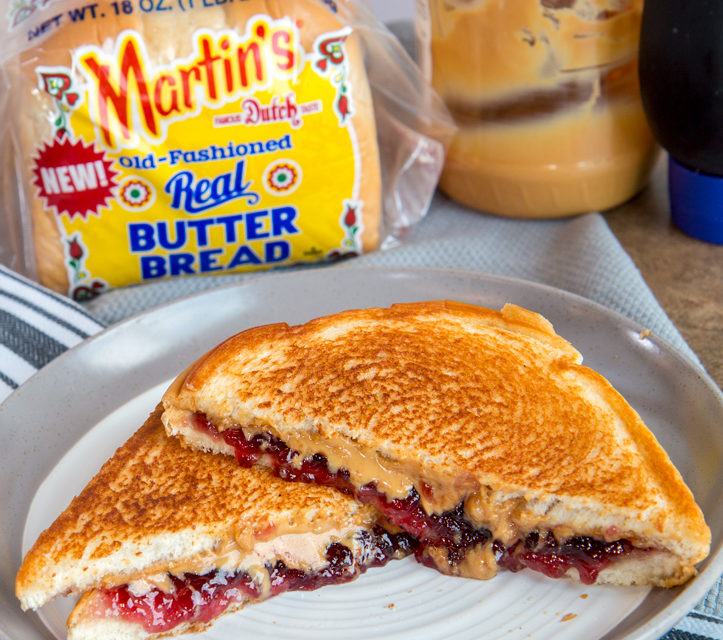

Grilled Peanutbutter & Jelly Sandwich

Description
Now don't get me wrong, I love myself a regular fresh peanutbutter and jelly sandwich,
but this isn't your run of the mill pb & j. This bad boy here requires a bit more of
finesse, this isn't your mommas after school snack you hear me!
Ingredients:
- 2 slices of bread
- Peanutbutter
- Grape Jelly, of course
- A table spoon of butter
STEPS:
- Spread butter on slices of bread
- Spread peanutbutter on one slice
- Spread jelly on other slice
- Throw that bad boy in the air fryer for like 4 minutes
- If you don't have an air fryer don't fret, throw it on a stove top pan, preferably a cast iron
- Enjoy!